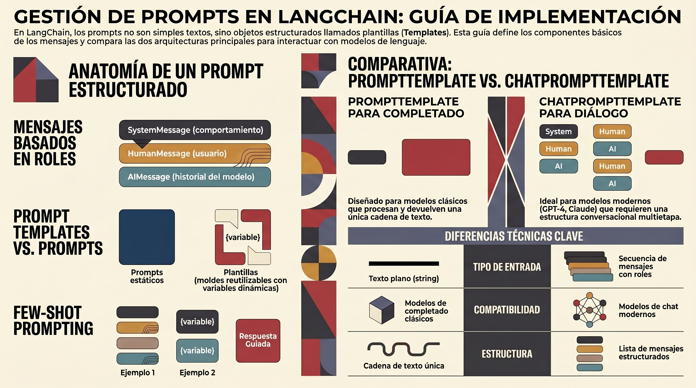

3. GESTION DE PROMPTS EN LANGCHAIN - PYTHON#
3.1. Introduccion y Conceptos Fundamentales#
3.1.1. Que son los Prompts en LangChain#
Los prompts son las instrucciones y el contexto que se pasan a un modelo de lenguaje (LLM) para guiar su comportamiento. En LangChain para Python, los prompts son objetos estructurados que permiten crear aplicaciones robustas y mantenibles.

3.1.2. Diferencia entre Prompt y Prompt Template#
Prompt: Mensaje completo y estático que se pasa al modelo
prompt = "Traduce 'hello' al español"
Prompt Template: Plantilla reutilizable con variables
from langchain_core.prompts import PromptTemplate
template = PromptTemplate.from_template("Traduce '{text}' al {language}")
3.1.3. Componentes Clave#
SystemMessage: Establece el rol y comportamiento del modelo
HumanMessage: Representa la entrada del usuario
AIMessage: Representa respuestas previas del modelo
Template Variables: Placeholders que se reemplazan dinámicamente
3.1.4. Instalacion#
pip install langchain-core
pip install langchain-openai # o el proveedor que uses
3.2. Tipos de Prompts y Messages#
3.2.1. SystemMessage#
Define el rol y comportamiento del asistente.
from langchain.messages import SystemMessage
system_msg = SystemMessage(
content="Eres un experto en Python con 10 años de experiencia. "
"Explicas conceptos de forma clara usando ejemplos prácticos."
)
3.2.2. HumanMessage#
Representa la entrada del usuario.
from langchain.messages import HumanMessage
user_msg = HumanMessage(
content="Explicame que son los decoradores en Python"
)
3.2.3. AIMessage#
Representa respuestas previas del modelo.
from langchain.messages import AIMessage
ai_msg = AIMessage(
content="Los decoradores son funciones que modifican el comportamiento "
"de otras funciones o clases..."
)
3.2.4. Conversacion Multi-turn#
from langchain.messages import SystemMessage, HumanMessage, AIMessage
from langchain_openai import ChatOpenAI
model = ChatOpenAI(model="gpt-4")
messages = [
SystemMessage("Eres un asistente experto en literatura"),
HumanMessage("Quien escribio Don Quijote?"),
AIMessage("Miguel de Cervantes escribio Don Quijote de la Mancha"),
HumanMessage("En que año lo publico?")
]
response = model.invoke(messages)
print(response.content)
3.2.5. Uso Directo con Modelos#
from langchain_openai import ChatOpenAI
from langchain.messages import SystemMessage, HumanMessage
model = ChatOpenAI(model="gpt-4")
messages = [
SystemMessage("Eres un asistente util"),
HumanMessage("Cual es la capital de Francia?")
]
response = model.invoke(messages)
print(response.content)
# Output: "La capital de Francia es Paris."
3.3. ChatPromptTemplate#
3.3.1. Creacion Basica#
ChatPromptTemplate es la forma recomendada de trabajar con chat models.
Metodo 1: Constructor directo
from langchain_core.prompts import ChatPromptTemplate
prompt = ChatPromptTemplate([
("system", "Eres un asistente especializado en {domain}."),
("human", "{question}")
])
Metodo 2: from_messages
from langchain_core.prompts import ChatPromptTemplate
prompt = ChatPromptTemplate.from_messages([
("system", "Eres un {role} con experiencia en {field}."),
("human", "{input}")
])
Metodo 3: from_template (solo user message)
from langchain_core.prompts import ChatPromptTemplate
prompt = ChatPromptTemplate.from_template(
"Explica {concept} a un estudiante de {level}"
)
3.3.2. Formateo de Prompts#
from langchain_core.prompts import ChatPromptTemplate
prompt = ChatPromptTemplate.from_messages([
("system", "Eres un traductor profesional."),
("human", "Traduce al {target_language}: {text}")
])
# Formatear el prompt
formatted_messages = prompt.format_messages(
target_language="frances",
text="Hello, how are you?"
)
print(formatted_messages)
# [
# SystemMessage(content='Eres un traductor profesional.'),
# HumanMessage(content='Traduce al frances: Hello, how are you?')
# ]
3.3.3. Uso con Models (Chains)#
from langchain_core.prompts import ChatPromptTemplate
from langchain_openai import ChatOpenAI
# Crear prompt template
prompt = ChatPromptTemplate.from_messages([
("system", "Eres un {role}."),
("human", "{question}")
])
# Crear modelo
model = ChatOpenAI(model="gpt-4")
# Crear chain con pipe operator
chain = prompt | model
# Invocar chain
result = chain.invoke({
"role": "experto en bases de datos",
"question": "Que es una transaccion ACID?"
})
print(result.content)
3.3.4. Mensajes Multiples#
from langchain_core.prompts import ChatPromptTemplate
prompt = ChatPromptTemplate.from_messages([
("system", "Eres un asistente de codigo Python."),
("human", "Como creo una lista?"),
("ai", "Puedes crear una lista asi: my_list = [1, 2, 3]"),
("human", "{follow_up_question}")
])
formatted = prompt.format_messages(
follow_up_question="Y como añado elementos?"
)
3.3.5. Message Placeholders#
Para conversaciones dinamicas:
from langchain_core.prompts import ChatPromptTemplate, MessagesPlaceholder
prompt = ChatPromptTemplate.from_messages([
("system", "Eres un asistente util"),
MessagesPlaceholder("chat_history"),
("human", "{input}")
])
# Uso
from langchain.messages import HumanMessage, AIMessage
chat_history = [
HumanMessage("Hola, mi nombre es Carlos"),
AIMessage("Hola Carlos, es un placer conocerte"),
]
formatted = prompt.format_messages(
chat_history=chat_history,
input="Cual es mi nombre?"
)
3.4. PromptTemplate para Strings#
Para completion models (no chat).
3.4.1. Creacion Basica#
from langchain_core.prompts import PromptTemplate
# Metodo 1: from_template
template = PromptTemplate.from_template(
"Cuenta una historia sobre {topic} en {style} estilo"
)
# Metodo 2: Constructor con input_variables
template = PromptTemplate(
input_variables=["topic", "style"],
template="Cuenta una historia sobre {topic} en {style} estilo"
)
3.4.2. Formateo#
from langchain_core.prompts import PromptTemplate
template = PromptTemplate.from_template(
"Resume el siguiente texto en {num_sentences} oraciones:\n\n{text}"
)
# Format como string
prompt_str = template.format(
num_sentences=3,
text="[texto largo aqui...]"
)
print(prompt_str)
3.4.3. Uso con LLM#
from langchain_core.prompts import PromptTemplate
from langchain_openai import OpenAI
template = PromptTemplate.from_template(
"Escribe un poema sobre {subject} en estilo {style}"
)
llm = OpenAI(temperature=0.9)
chain = template | llm
result = chain.invoke({
"subject": "la luna",
"style": "romantico"
})
print(result)
3.5. Variables y Formateo#
3.5.1. F-string Format (Por defecto)#
from langchain_core.prompts import PromptTemplate
# Variables simples
template = PromptTemplate.from_template(
"Hola {name}, bienvenido a {place}"
)
# Multiples variables
template = PromptTemplate.from_template(
"Analiza {data_type} datos de {source} usando {method}"
)
result = template.format(
data_type="ventas",
source="base de datos",
method="regresion lineal"
)
3.5.2. Partial Variables#
Variables con valores predefinidos:
from langchain_core.prompts import PromptTemplate
from datetime import datetime
def get_current_date():
return datetime.now().strftime("%Y-%m-%d")
# Partial con funcion
prompt = PromptTemplate(
template="Hoy es {date}. {instructions}",
input_variables=["instructions"],
partial_variables={"date": get_current_date}
)
# Al formatear, solo necesitas 'instructions'
result = prompt.format(instructions="Resume las noticias del dia")
# Partial con valor estatico
prompt = PromptTemplate(
template="Version: {version}. {task}",
input_variables=["task"],
partial_variables={"version": "1.0.0"}
)
3.5.3. Partial Dinamico#
from langchain_core.prompts import PromptTemplate
template = PromptTemplate.from_template(
"Contexto: {context}\nPregunta: {question}"
)
# Aplicar partial despues de crear el template
partial_template = template.partial(context="Estamos en 2024")
# Ahora solo necesitas 'question'
result = partial_template.format(question="Que año es?")
3.5.4. Variables Opcionales#
from langchain_core.prompts import PromptTemplate
template = PromptTemplate(
template="Usuario: {name}\nEdad: {age}\nCiudad: {city}",
input_variables=["name"],
partial_variables={"age": "N/A", "city": "N/A"}
)
# Puedes proporcionar solo name
result1 = template.format(name="Ana")
# O proporcionar todas
result2 = template.format(name="Carlos", age="30", city="Madrid")
3.6. Few-Shot Prompting#
3.6.1. Concepto#
Few-shot prompting proporciona ejemplos al modelo para guiar su comportamiento.
3.6.2. FewShotPromptTemplate#
from langchain_core.prompts import FewShotPromptTemplate, PromptTemplate
# Definir ejemplos
examples = [
{"word": "feliz", "antonym": "triste"},
{"word": "alto", "antonym": "bajo"},
{"word": "caliente", "antonym": "frio"},
]
# Template para cada ejemplo
example_template = PromptTemplate(
input_variables=["word", "antonym"],
template="Palabra: {word}\nAntonimo: {antonym}"
)
# Few-shot template
few_shot_prompt = FewShotPromptTemplate(
examples=examples,
example_prompt=example_template,
prefix="Da el antonimo de cada palabra:",
suffix="Palabra: {input}\nAntonimo:",
input_variables=["input"]
)
# Generar prompt
print(few_shot_prompt.format(input="grande"))
Output:
Da el antonimo de cada palabra:
Palabra: feliz
Antonimo: triste
Palabra: alto
Antonimo: bajo
Palabra: caliente
Antonimo: frio
Palabra: grande
Antonimo:
3.6.3. FewShotChatMessagePromptTemplate#
Para chat models:
from langchain_core.prompts import (
ChatPromptTemplate,
FewShotChatMessagePromptTemplate
)
# Ejemplos
examples = [
{"input": "2+2", "output": "4"},
{"input": "3*5", "output": "15"},
{"input": "10-7", "output": "3"},
]
# Template para cada ejemplo
example_prompt = ChatPromptTemplate.from_messages([
("human", "{input}"),
("ai", "{output}")
])
# Few-shot prompt
few_shot_prompt = FewShotChatMessagePromptTemplate(
example_prompt=example_prompt,
examples=examples
)
# Prompt final
final_prompt = ChatPromptTemplate.from_messages([
("system", "Eres una calculadora. Responde solo con el numero."),
few_shot_prompt,
("human", "{input}")
])
# Uso
chain = final_prompt | model
result = chain.invoke({"input": "8+5"})
3.6.4. Example Selector Dinamico#
Selecciona ejemplos dinamicamente basandose en similaridad:
from langchain_core.prompts import (
FewShotChatMessagePromptTemplate,
ChatPromptTemplate
)
from langchain_core.example_selectors import SemanticSimilarityExampleSelector
from langchain_openai import OpenAIEmbeddings
from langchain_community.vectorstores import Chroma
# Ejemplos
examples = [
{
"input": "Me encanta este producto, es fantastico!",
"output": "Sentimiento: POSITIVO"
},
{
"input": "Pesimo servicio, nunca volvere",
"output": "Sentimiento: NEGATIVO"
},
{
"input": "Esta bien, nada especial",
"output": "Sentimiento: NEUTRAL"
},
{
"input": "Increible experiencia, superó mis expectativas",
"output": "Sentimiento: POSITIVO"
},
{
"input": "Decepcionante y caro",
"output": "Sentimiento: NEGATIVO"
}
]
# Crear selector semantico
example_selector = SemanticSimilarityExampleSelector.from_examples(
examples,
OpenAIEmbeddings(),
Chroma,
k=2 # Seleccionar 2 ejemplos mas similares
)
# Template para ejemplos
example_prompt = ChatPromptTemplate.from_messages([
("human", "{input}"),
("ai", "{output}")
])
# Few-shot con selector
few_shot_prompt = FewShotChatMessagePromptTemplate(
example_selector=example_selector,
example_prompt=example_prompt
)
# Prompt final
final_prompt = ChatPromptTemplate.from_messages([
("system", "Analiza el sentimiento del texto"),
few_shot_prompt,
("human", "{input}")
])
# El selector elegira los ejemplos mas relevantes automaticamente
chain = final_prompt | model
result = chain.invoke({"input": "Me gusto mucho la atencion"})
3.6.5. Length-Based Example Selector#
Selecciona ejemplos basandose en longitud:
from langchain_core.prompts import FewShotPromptTemplate, PromptTemplate
from langchain_core.example_selectors import LengthBasedExampleSelector
examples = [
{"input": "feliz", "output": "triste"},
{"input": "grande", "output": "pequeño"},
{"input": "energetico", "output": "letargico"},
]
example_template = PromptTemplate(
input_variables=["input", "output"],
template="Input: {input}\nOutput: {output}"
)
example_selector = LengthBasedExampleSelector(
examples=examples,
example_prompt=example_template,
max_length=25 # Maximo caracteres total
)
prompt = FewShotPromptTemplate(
example_selector=example_selector,
example_prompt=example_template,
prefix="Da el antonimo:",
suffix="Input: {input}\nOutput:",
input_variables=["input"]
)
3.7. Composicion de Prompts#
3.7.1. PipelinePromptTemplate#
Combina multiples prompts:
from langchain_core.prompts import PipelinePromptTemplate, PromptTemplate
# Prompt para introduccion
intro_template = PromptTemplate.from_template(
"Eres un {role} especializado en {field}."
)
# Prompt para instrucciones
instruction_template = PromptTemplate.from_template(
"Tu tarea es: {task}"
)
# Prompt para el ejemplo
example_template = PromptTemplate.from_template(
"Ejemplo: {example}"
)
# Prompt final
final_template = PromptTemplate.from_template(
"""{intro}
{instructions}
{example}
Ahora, responde: {question}"""
)
# Pipeline
pipeline_prompt = PipelinePromptTemplate(
final_prompt=final_template,
pipeline_prompts=[
("intro", intro_template),
("instructions", instruction_template),
("example", example_template),
]
)
# Uso
result = pipeline_prompt.format(
role="profesor",
field="matematicas",
task="explicar conceptos de forma simple",
example="2+2=4",
question="Que es una integral?"
)
3.7.2. Composicion con + operator#
from langchain_core.prompts import ChatPromptTemplate
prompt1 = ChatPromptTemplate.from_messages([
("system", "Eres un asistente util")
])
prompt2 = ChatPromptTemplate.from_messages([
("human", "{input}")
])
# Combinar prompts
combined_prompt = prompt1 + prompt2
# Uso
messages = combined_prompt.format_messages(input="Hola")
3.7.3. Prompt Composition con Strings#
from langchain_core.prompts import PromptTemplate
# Template base
base_template = "Contexto: {context}\n"
# Template de tarea
task_template = "Tarea: {task}\n"
# Template de pregunta
question_template = "Pregunta: {question}"
# Combinar
full_template = base_template + task_template + question_template
prompt = PromptTemplate.from_template(full_template)
result = prompt.format(
context="Estamos en el año 2024",
task="Responder preguntas sobre el contexto",
question="Que año es?"
)
3.8. Prompts Dinamicos#
3.8.1. Prompts Basados en Condiciones#
from langchain_core.prompts import PromptTemplate
def create_dynamic_prompt(user_level):
if user_level == "principiante":
template = (
"Explica {concept} de forma muy simple, "
"usando analogias y evitando tecnicismos."
)
elif user_level == "intermedio":
template = (
"Explica {concept} con detalle tecnico moderado "
"e incluye ejemplos de codigo."
)
else: # experto
template = (
"Proporciona una explicacion avanzada de {concept}, "
"incluyendo detalles de implementacion y casos edge."
)
return PromptTemplate.from_template(template)
# Uso
prompt_beginner = create_dynamic_prompt("principiante")
prompt_expert = create_dynamic_prompt("experto")
result1 = prompt_beginner.format(concept="recursion")
result2 = prompt_expert.format(concept="recursion")
3.8.2. Prompts con Context Runtime#
Para agents con middleware:
from langchain.agents import create_agent, dynamicSystemPromptMiddleware
def get_dynamic_prompt(state, runtime):
user_id = runtime.context.get("user_id")
message_count = len(state["messages"])
base_prompt = "Eres un asistente util."
if message_count > 10:
base_prompt += " Se breve y conciso."
if user_id == "premium_user":
base_prompt += " Proporciona respuestas detalladas."
return base_prompt
agent = create_agent(
model="gpt-4",
tools=[...],
middleware=[dynamicSystemPromptMiddleware(get_dynamic_prompt)]
)
3.8.3. Prompts Basados en Historial#
from langchain_core.prompts import ChatPromptTemplate, MessagesPlaceholder
def create_context_aware_prompt(chat_history):
# Analizar historial
message_count = len(chat_history)
if message_count == 0:
system_msg = "Eres un asistente util. Saluda al usuario."
elif message_count < 5:
system_msg = "Eres un asistente util. Responde las preguntas."
else:
system_msg = "Eres un asistente util. Resume cuando sea apropiado."
prompt = ChatPromptTemplate.from_messages([
("system", system_msg),
MessagesPlaceholder("chat_history"),
("human", "{input}")
])
return prompt
# Uso
prompt = create_context_aware_prompt(chat_history)
3.8.4. Prompts con Variables Computadas#
from langchain_core.prompts import PromptTemplate
from datetime import datetime
def get_time_based_prompt():
hour = datetime.now().hour
if hour < 12:
greeting = "Buenos dias"
tone = "energico"
elif hour < 18:
greeting = "Buenas tardes"
tone = "profesional"
else:
greeting = "Buenas noches"
tone = "relajado"
template = f"""{greeting}.
Hoy es {{date}}.
Responde en tono {tone}.
Pregunta: {{question}}"""
return PromptTemplate(
template=template,
input_variables=["question"],
partial_variables={"date": datetime.now().strftime("%Y-%m-%d")}
)
# Uso
prompt = get_time_based_prompt()
result = prompt.format(question="Como estas?")
3.9. Gestion con LangSmith#
3.9.1. Configuracion Inicial#
import os
# Configurar API key
os.environ["LANGSMITH_API_KEY"] = "tu-api-key"
os.environ["LANGSMITH_TRACING"] = "true"
os.environ["LANGSMITH_PROJECT"] = "mi-proyecto"
3.9.2. Push Prompt a LangSmith#
from langsmith import Client
from langchain_core.prompts import ChatPromptTemplate
client = Client()
# Crear prompt
prompt = ChatPromptTemplate.from_messages([
("system", "Eres un asistente especializado en {domain}."),
("human", "{question}")
])
# Subir a LangSmith
url = client.push_prompt("mi-prompt-v1", object=prompt)
print(f"Prompt guardado en: {url}")
3.9.3. Pull Prompt desde LangSmith#
from langchain_classic import hub as prompts
# Obtener ultima version
prompt = prompts.pull("mi-prompt-v1")
# Obtener version especifica
prompt = prompts.pull("mi-prompt-v1:commit-hash")
# Usar el prompt
result = prompt.format(domain="matematicas", question="Que es pi?")
3.9.4. Versionado de Prompts#
from langsmith import Client
from langchain_core.prompts import ChatPromptTemplate
client = Client()
# Version 1.0
prompt_v1 = ChatPromptTemplate.from_messages([
("system", "Eres un asistente util."),
("human", "{input}")
])
client.push_prompt("mi-asistente", object=prompt_v1)
# Version 2.0 - Mejorada
prompt_v2 = ChatPromptTemplate.from_messages([
("system", "Eres un asistente experto y util. Siempre verifica tus respuestas."),
("human", "{input}")
])
# Actualizar (crea nueva version automaticamente)
client.push_prompt("mi-asistente", object=prompt_v2)
3.9.5. Prompts con Model Configuration#
from langchain_classic import hub as prompts
from langchain_core.prompts import ChatPromptTemplate
from langchain_openai import ChatOpenAI
# Crear chain completo (prompt + model)
prompt = ChatPromptTemplate.from_template("Explica {topic}")
model = ChatOpenAI(model="gpt-4", temperature=0.7)
chain = prompt | model
# Subir chain completo
prompts.push("mi-chain-completo", chain)
# Recuperar y usar
retrieved_chain = prompts.pull("mi-chain-completo")
result = retrieved_chain.invoke({"topic": "quantistica"})
3.10. Casos de Uso Avanzados#
3.10.1. RAG con Prompt Template#
from langchain_core.prompts import ChatPromptTemplate
from langchain_core.output_parsers import StrOutputParser
from langchain_openai import ChatOpenAI, OpenAIEmbeddings
from langchain_community.vectorstores import Chroma
# Setup vectorstore
vectorstore = Chroma.from_texts(
["texto1", "texto2", "texto3"],
OpenAIEmbeddings()
)
retriever = vectorstore.as_retriever()
# Prompt para RAG
prompt = ChatPromptTemplate.from_template("""
Responde la pregunta basandote UNICAMENTE en el siguiente contexto:
Contexto: {context}
Pregunta: {question}
Si no puedes responder con el contexto dado, di "No tengo suficiente informacion".
""")
# Chain
model = ChatOpenAI()
chain = (
{"context": retriever, "question": lambda x: x}
| prompt
| model
| StrOutputParser()
)
# Uso
result = chain.invoke("Cual es la pregunta?")
3.10.2. Chain of Thought Prompting#
from langchain_core.prompts import ChatPromptTemplate
cot_prompt = ChatPromptTemplate.from_template("""
Resuelve el siguiente problema paso a paso:
Problema: {problem}
Razonamiento:
1. Primero, identifica los datos relevantes
2. Luego, determina que operaciones necesitas
3. Ejecuta los calculos paso a paso
4. Verifica tu respuesta
Solucion:
""")
chain = cot_prompt | model
result = chain.invoke({
"problem": "Si Juan tiene 3 manzanas y Maria le da 5 mas, cuantas tiene?"
})
3.10.3. Self-Ask Prompting#
from langchain_core.prompts import ChatPromptTemplate
self_ask_prompt = ChatPromptTemplate.from_template("""
Pregunta: {question}
Para responder esta pregunta, primero necesito responder:
- Sub-pregunta 1: {subquestion1}
- Sub-pregunta 2: {subquestion2}
Descompon la pregunta en sub-preguntas y responde cada una.
""")
3.10.4. Prompt para Clasificacion#
from langchain_core.prompts import ChatPromptTemplate
from pydantic import BaseModel, Field
class Classification(BaseModel):
category: str = Field(description="La categoria del texto")
confidence: float = Field(description="Confianza de 0 a 1")
reasoning: str = Field(description="Razonamiento de la clasificacion")
prompt = ChatPromptTemplate.from_template("""
Clasifica el siguiente texto en una de estas categorias:
['tecnologia', 'deportes', 'politica', 'entretenimiento']
Texto: {text}
Proporciona tu clasificacion con confianza y razonamiento.
""")
# Con structured output
model_with_structure = model.with_structured_output(Classification)
chain = prompt | model_with_structure
result = chain.invoke({"text": "El nuevo iPhone tiene camara mejorada"})
3.10.5. Multi-Step Reasoning#
from langchain_core.prompts import ChatPromptTemplate
multi_step_prompt = ChatPromptTemplate.from_messages([
("system", """
Eres un asistente que resuelve problemas complejos en multiples pasos.
Para cada problema:
1. ANALISIS: Identifica los componentes clave
2. PLAN: Describe tu estrategia de solucion
3. EJECUCION: Implementa tu plan paso a paso
4. VERIFICACION: Verifica tu respuesta
"""),
("human", "{problem}")
])
chain = multi_step_prompt | model
result = chain.invoke({
"problem": "Como puedo optimizar una consulta SQL lenta?"
})
3.10.6. Prompt para Code Generation#
from langchain_core.prompts import ChatPromptTemplate
code_prompt = ChatPromptTemplate.from_template("""
Genera codigo Python para la siguiente tarea:
Tarea: {task}
Requisitos:
- Usa type hints
- Incluye docstrings
- Maneja errores apropiadamente
- Sigue PEP 8
Codigo:
def {function_name}():
''' Documentacion aqui
'''
pass
''' Genera el codigo completo:
""")
chain = code_prompt | model result = chain.invoke({
"task": "crear una funcion que valide emails",
"function_name": "validate_email"
})
def {function_name}():
'''
Documentacion aqui
'''
pass
3.10.7. Prompt para Analisis de Sentimiento#
python
from langchain_core.prompts import ChatPromptTemplate, FewShotChatMessagePromptTemplate
# Ejemplos para few-shot
sentiment_examples = [
{
"text": "Este producto es increible, superó mis expectativas!",
"analysis": "Sentimiento: POSITIVO (95% confianza)\nEmocion principal: Alegria\nAspectos positivos: calidad del producto"
},
{
"text": "Pesimo servicio al cliente, nunca responden",
"analysis": "Sentimiento: NEGATIVO (90% confianza)\nEmocion principal: Frustracion\nAspectos negativos: atencion al cliente"
},
{
"text": "Es aceptable, cumple su funcion basica",
"analysis": "Sentimiento: NEUTRAL (80% confianza)\nEmocion principal: Indiferencia\nAspectos: funcionalidad basica"
}
]
example_prompt = ChatPromptTemplate.from_messages([
("human", "{text}"),
("ai", "{analysis}")
])
few_shot_prompt = FewShotChatMessagePromptTemplate(
example_prompt=example_prompt,
examples=sentiment_examples
)
final_prompt = ChatPromptTemplate.from_messages([
("system", "Analiza el sentimiento del texto con detalle"),
few_shot_prompt,
("human", "{input}")
])
chain = final_prompt | model
3.10.8. Prompt para Traduccion con Contexto#
python
from langchain_core.prompts import ChatPromptTemplate
translation_prompt = ChatPromptTemplate.from_template("""
Traduce el siguiente texto de {source_lang} a {target_lang}.
Contexto: {context}
Tono deseado: {tone}
Audiencia: {audience}
Texto original:
{text}
Traduccion:
""")
result = translation_prompt.format(
source_lang="ingles",
target_lang="español",
context="marketing de producto tecnologico",
tone="profesional pero accesible",
audience="consumidores jovenes",
text="Our innovative solution leverages cutting-edge technology"
)
3.10.9. Prompt para Extraction#
python
from langchain_core.prompts import ChatPromptTemplate
from pydantic import BaseModel, Field
from typing import List
class PersonInfo(BaseModel):
name: str = Field(description="Nombre completo")
age: int = Field(description="Edad")
occupation: str = Field(description="Ocupacion")
location: str = Field(description="Ubicacion")
extraction_prompt = ChatPromptTemplate.from_template("""
Extrae la informacion de las personas mencionadas en el texto.
Texto: {text}
Extrae: nombre, edad, ocupacion y ubicacion de cada persona.
""")
model_with_structure = model.with_structured_output(List[PersonInfo])
chain = extraction_prompt | model_with_structure
result = chain.invoke({
"text": "Juan Perez tiene 30 años y trabaja como ingeniero en Madrid. "
"Su colega Maria Lopez, de 28 años, es diseñadora en Barcelona."
})
3.10.10. Prompt para Summarization con Control#
python
from langchain_core.prompts import ChatPromptTemplate
summarization_prompt = ChatPromptTemplate.from_template("""
Resume el siguiente texto.
Parametros:
- Longitud: {length} (corto/medio/largo)
- Estilo: {style} (tecnico/casual/formal)
- Enfoque: {focus} (ideas principales/detalles/acciones)
- Audiencia: {audience}
Texto:
{text}
Resumen:
""")
# Diferentes configuraciones
configs = [
{
"length": "corto",
"style": "casual",
"focus": "ideas principales",
"audience": "publico general"
},
{
"length": "largo",
"style": "tecnico",
"focus": "detalles",
"audience": "expertos"
}
]
for config in configs:
result = summarization_prompt.format(
**config,
text="[texto largo aqui]"
)
3.11. Buenas prácticas#
3.11.1. Estructura y Claridad#
python
# MAL: Prompt ambiguo
bad_prompt = PromptTemplate.from_template("Dime sobre {topic}")
# BIEN: Prompt especifico y estructurado
good_prompt = PromptTemplate.from_template("""
Proporciona una explicacion detallada sobre {topic}.
Incluye:
1. Definicion clara
2. Casos de uso practicos
3. Ventajas y desventajas
4. Un ejemplo concreto
Respuesta:
""")
3.11.2. Separacion de Concerns#
python
# BIEN: Separar system prompt de instrucciones especificas
from langchain_core.prompts import ChatPromptTemplate
prompt = ChatPromptTemplate.from_messages([
("system", "Eres un experto en {domain}."),
("human", """
Analiza el siguiente codigo:
```python
{code}
```
Enfocate en: {analysis_type}
""")
])
3.11.3. Validacion de Inputs#
python
from langchain_core.prompts import PromptTemplate
from pydantic import BaseModel, Field, validator
class PromptInputs(BaseModel):
question: str = Field(min_length=1, max_length=500)
context: str = Field(min_length=1)
@validator('question')
def question_must_not_be_empty(cls, v):
if not v.strip():
raise ValueError('La pregunta no puede estar vacia')
return v
def safe_format_prompt(prompt_template, **kwargs):
try:
inputs = PromptInputs(**kwargs)
return prompt_template.format(**inputs.dict())
except Exception as e:
print(f"Error validando inputs: {e}")
return None
3.11.4. Testing de Prompts#
python
from langchain_core.prompts import ChatPromptTemplate
from langchain_openai import ChatOpenAI
def test_prompt_variations():
base_prompt = ChatPromptTemplate.from_template(
"Explica {concept} en {style} estilo"
)
test_cases = [
{"concept": "recursion", "style": "simple"},
{"concept": "async", "style": "tecnico"},
{"concept": "decoradores", "style": "con ejemplos"}
]
model = ChatOpenAI(model="gpt-4")
results = []
for test_case in test_cases:
formatted = base_prompt.format_messages(**test_case)
response = model.invoke(formatted)
results.append({
"input": test_case,
"output": response.content,
"length": len(response.content)
})
return results
# Ejecutar tests
test_results = test_prompt_variations()
3.11.5. Versionado y Documentacion#
python
from langchain_core.prompts import ChatPromptTemplate
from datetime import datetime
class VersionedPrompt:
"""
Prompt versionado para produccion
Version: 2.1.0
Fecha: 2024-01-15
Autor: Equipo ML
Cambios: Mejorado manejo de casos edge
"""
VERSION = "2.1.0"
LAST_UPDATED = "2024-01-15"
@staticmethod
def get_prompt():
return ChatPromptTemplate.from_messages([
("system", f"""
Eres un asistente de analisis de codigo.
Version del prompt: {VersionedPrompt.VERSION}
Ultima actualizacion: {VersionedPrompt.LAST_UPDATED}
Instrucciones:
- Analiza el codigo proporcionado
- Identifica problemas potenciales
- Sugiere mejoras
"""),
("human", "{code}")
])
# Uso
prompt = VersionedPrompt.get_prompt()
3.11.6. Manejo de Errores#
python
from langchain_core.prompts import ChatPromptTemplate
from typing import Optional
def safe_prompt_invoke(prompt, model, inputs: dict) -> Optional[str]:
"""
Invoca un prompt con manejo robusto de errores
"""
try:
# Validar inputs requeridos
required_vars = prompt.input_variables
missing_vars = [var for var in required_vars if var not in inputs]
if missing_vars:
raise ValueError(f"Faltan variables requeridas: {missing_vars}")
# Formatear y ejecutar
formatted = prompt.format_messages(**inputs)
response = model.invoke(formatted)
return response.content
except ValueError as e:
print(f"Error de validacion: {e}")
return None
except Exception as e:
print(f"Error inesperado: {e}")
return None
# Uso
result = safe_prompt_invoke(
prompt=my_prompt,
model=my_model,
inputs={"question": "Hola"}
)
3.11.7. Optimizacion de Tokens#
python
from langchain_core.prompts import ChatPromptTemplate
# MAL: Prompt verboso
bad_prompt = ChatPromptTemplate.from_template("""
Por favor, toma en consideracion el siguiente texto que te estoy proporcionando
y realiza un analisis exhaustivo y detallado del mismo, teniendo en cuenta todos
los aspectos relevantes y proporcionando una respuesta completa y bien estructurada
que cubra todos los puntos importantes mencionados en el texto.
Texto: {text}
""")
# BIEN: Prompt conciso pero claro
good_prompt = ChatPromptTemplate.from_template("""
Analiza el texto cubriendo:
- Ideas principales
- Temas clave
- Conclusiones
Texto: {text}
""")
3.11.8. Prompts Reutilizables#
python
from langchain_core.prompts import ChatPromptTemplate
class PromptLibrary:
"""Biblioteca centralizada de prompts reutilizables"""
@staticmethod
def analysis_prompt(domain: str):
return ChatPromptTemplate.from_messages([
("system", f"Eres un experto en {domain}."),
("human", "Analiza: {input}")
])
@staticmethod
def summarization_prompt():
return ChatPromptTemplate.from_template(
"Resume en {num_sentences} oraciones: {text}"
)
@staticmethod
def qa_prompt():
return ChatPromptTemplate.from_template("""
Contexto: {context}
Pregunta: {question}
Responde basandote solo en el contexto.
""")
# Uso
prompt = PromptLibrary.analysis_prompt("Python")
result = prompt.format(input="Este codigo...")
3.11.9. Monitoring y Logging#
python
import logging
from langchain_core.prompts import ChatPromptTemplate
from datetime import datetime
logging.basicConfig(level=logging.INFO)
logger = logging.getLogger(__name__)
class MonitoredPrompt:
def __init__(self, prompt: ChatPromptTemplate):
self.prompt = prompt
self.usage_count = 0
def format_and_log(self, **kwargs):
self.usage_count += 1
logger.info(f"Prompt usado {self.usage_count} veces")
logger.info(f"Timestamp: {datetime.now()}")
logger.info(f"Inputs: {list(kwargs.keys())}")
try:
result = self.prompt.format_messages(**kwargs)
logger.info("Prompt formateado exitosamente")
return result
except Exception as e:
logger.error(f"Error formateando prompt: {e}")
raise
# Uso
monitored = MonitoredPrompt(my_prompt)
result = monitored.format_and_log(question="Test")
3.11.10. Performance Testing#
python
import time
from langchain_core.prompts import ChatPromptTemplate
from typing import List, Dict
def benchmark_prompts(prompts: List[ChatPromptTemplate],
model,
test_inputs: List[Dict]) -> Dict:
"""
Benchmark de multiples prompts
"""
results = {}
for i, prompt in enumerate(prompts):
times = []
for inputs in test_inputs:
start = time.time()
formatted = prompt.format_messages(**inputs)
response = model.invoke(formatted)
elapsed = time.time() - start
times.append(elapsed)
results[f"prompt_{i}"] = {
"avg_time": sum(times) / len(times),
"min_time": min(times),
"max_time": max(times)
}
return results
# Uso
prompts_to_test = [prompt_v1, prompt_v2, prompt_v3]
test_data = [{"question": "test1"}, {"question": "test2"}]
benchmark_results = benchmark_prompts(prompts_to_test, model, test_data)
3.12. Diferencias entre PromptTemplate y ChatPromptTemplate en LangChain (Python)#
3.13. Introducción#
En LangChain para Python, existen dos clases principales para crear plantillas de prompts: PromptTemplate y ChatPromptTemplate. Aunque ambas sirven para estructurar y formatear las instrucciones que se envían a los modelos de lenguaje, están diseñadas para tipos de modelos diferentes y tienen características distintas.
3.14. PromptTemplate#
3.14.1. Descripción#
PromptTemplate es una plantilla diseñada para modelos de lenguaje basados en completado de texto (completion models). Estos modelos reciben una cadena de texto simple como entrada y generan una continuación o respuesta en formato de texto plano.
3.14.2. Características principales#
Acepta y genera texto plano (strings)
No soporta roles conversacionales (system, human, AI)
Utiliza sintaxis de formato de Python (f-string) por defecto
Diseñado para modelos de completado clásicos
Retorna un objeto
StringPromptValueal ser invocado
3.14.3. Casos de uso#
Modelos base como GPT-3 (davinci, curie)
Modelos de completado de texto sin estructura conversacional
LLaMA base, GPT-NeoX y otros modelos similares
Aplicaciones donde solo se necesita entrada y salida de texto simple
3.14.4. Ejemplo básico#
from langchain_core.prompts import PromptTemplate
# Crear una plantilla simple
template = PromptTemplate.from_template("Cuéntame un dato interesante sobre {tema}")
# Formatear la plantilla
prompt_formateado = template.format(tema="océanos")
print(prompt_formateado)
# Salida: "Cuéntame un dato interesante sobre océanos"
# Invocar (método Runnable)
prompt_value = template.invoke({"tema": "océanos"})
print(prompt_value)
# Retorna: StringPromptValue(text='Cuéntame un dato interesante sobre océanos')
3.14.5. Ejemplo con múltiples variables#
from langchain_core.prompts import PromptTemplate
# Plantilla con múltiples variables
template = PromptTemplate(
input_variables=["adjetivo", "tema"],
template="Cuéntame un chiste {adjetivo} sobre {tema}."
)
# Formatear
resultado = template.format(adjetivo="gracioso", tema="programadores")
print(resultado)
# Salida: "Cuéntame un chiste gracioso sobre programadores."
3.15. ChatPromptTemplate#
3.15.1. Descripción#
ChatPromptTemplate es una plantilla diseñada específicamente para modelos de chat que utilizan una estructura conversacional basada en roles. Estos modelos esperan una secuencia de mensajes, cada uno con un rol específico.
3.15.2. Características principales#
Acepta y genera secuencias de mensajes con roles
Soporta roles conversacionales: system, human, AI
Permite estructurar conversaciones multi-turno
Diseñado para modelos de chat modernos
Retorna un objeto
ChatPromptValueal ser invocadoPuede usar tanto sintaxis f-string como mustache para formateo
3.15.3. Tipos de mensajes#
SystemMessage: Define el comportamiento del asistente, establece el contexto y las reglas
HumanMessage: Representa los mensajes del usuario
AIMessage: Representa las respuestas previas del modelo
3.15.4. Casos de uso#
Modelos de chat como ChatGPT (gpt-3.5-turbo, gpt-4)
ChatAnthropic, ChatOllama, y otros modelos conversacionales
Aplicaciones de chatbot y asistentes virtuales
Sistemas de preguntas y respuestas conversacionales
Cualquier aplicación que requiera contexto conversacional estructurado
3.15.5. Ejemplo básico#
from langchain_core.prompts import ChatPromptTemplate
# Crear una plantilla de chat simple
template = ChatPromptTemplate.from_messages([
("system", "Eres un asistente útil."),
("human", "Háblame sobre {tema}")
])
# Formatear mensajes
mensajes = template.format_messages(tema="inteligencia artificial")
print(mensajes)
# Salida:
# [SystemMessage(content='Eres un asistente útil.'),
# HumanMessage(content='Háblame sobre inteligencia artificial')]
# Invocar (método Runnable)
prompt_value = template.invoke({"tema": "inteligencia artificial"})
print(prompt_value)
# Retorna: ChatPromptValue con lista de mensajes
3.15.6. Ejemplo con conversación multi-turno#
from langchain_core.prompts import ChatPromptTemplate
# Plantilla con historial conversacional
template = ChatPromptTemplate.from_messages([
("system", "Eres un asistente experto en {especialidad}."),
("human", "Hola, ¿cómo estás?"),
("ai", "Estoy bien, gracias. ¿En qué puedo ayudarte?"),
("human", "{pregunta_usuario}")
])
# Formatear
mensajes = template.format_messages(
especialidad="física",
pregunta_usuario="¿Qué es la mecánica cuántica?"
)
3.15.7. Ejemplo con MessagePromptTemplate#
from langchain_core.prompts import (
ChatPromptTemplate,
SystemMessagePromptTemplate,
HumanMessagePromptTemplate
)
# Crear plantilla más estructurada
system_template = SystemMessagePromptTemplate.from_template(
"Eres un asistente con personalidad {personalidad}"
)
human_template = HumanMessagePromptTemplate.from_template(
"{entrada_usuario}"
)
# Combinar en ChatPromptTemplate
chat_prompt = ChatPromptTemplate.from_messages([
system_template,
human_template
])
# Usar
mensajes = chat_prompt.format_messages(
personalidad="humorística",
entrada_usuario="Cuéntame sobre Python"
)
3.16. Tabla comparativa#
Aspecto |
PromptTemplate |
ChatPromptTemplate |
|---|---|---|
Tipo de entrada |
Texto plano (string) |
Secuencia de mensajes con roles |
Tipo de salida |
StringPromptValue |
ChatPromptValue |
Soporta roles |
No |
Sí (system, human, ai) |
Modelos compatibles |
Modelos de completado clásicos |
Modelos de chat conversacionales |
Estructura |
Una sola cadena de texto |
Lista de mensajes estructurados |
Casos de uso |
Completado simple de texto |
Conversaciones, chatbots, Q&A |
Formato |
f-string (por defecto) |
f-string o mustache |
Complejidad |
Más simple |
Más expresivo y estructurado |
3.17. ¿Cuándo usar cada uno?#
3.17.1. Usa PromptTemplate cuando:#
Trabajas con modelos de completado de texto tradicionales
No necesitas estructura conversacional
Tu aplicación solo requiere entrada/salida de texto simple
Buscas la máxima simplicidad en prompts básicos
3.17.2. Usa ChatPromptTemplate cuando:#
Trabajas con modelos de chat modernos (ChatGPT, Claude, etc.)
Necesitas definir roles y contexto del sistema
Construyes conversaciones multi-turno
Requieres estructurar el historial conversacional
Desarrollas chatbots o asistentes virtuales
3.18. Integración con chains#
Ambas clases implementan la interfaz Runnable de LangChain Expression Language (LCEL), lo que significa que pueden encadenarse con otros componentes:
from langchain_core.prompts import ChatPromptTemplate
from langchain_openai import ChatOpenAI
from langchain_core.output_parsers import StrOutputParser
# Crear chain con ChatPromptTemplate
prompt = ChatPromptTemplate.from_messages([
("system", "Eres un asistente útil."),
("user", "{pregunta}")
])
model = ChatOpenAI(model="gpt-4")
output_parser = StrOutputParser()
# Encadenar componentes usando el operador pipe
chain = prompt | model | output_parser
# Invocar el chain completo
resultado = chain.invoke({"pregunta": "¿Qué es Python?"})
3.19. Errores comunes#
3.19.1. Error 1: Usar ChatPromptTemplate con el constructor incorrecto#
# INCORRECTO
template = ChatPromptTemplate(template="Hola {nombre}")
# CORRECTO
template = ChatPromptTemplate.from_messages([
("human", "Hola {nombre}")
])
3.19.2. Error 2: No pasar un diccionario al invocar#
# INCORRECTO
resultado = template.invoke("mi texto")
# CORRECTO
resultado = template.invoke({"variable": "mi texto"})
3.19.3. Error 3: Mezclar tipos de plantillas con modelos incompatibles#
# INCORRECTO - PromptTemplate con modelo de chat
from langchain_core.prompts import PromptTemplate
from langchain_openai import ChatOpenAI
prompt = PromptTemplate.from_template("Pregunta: {pregunta}")
model = ChatOpenAI() # Modelo de chat
# Esto puede causar problemas
# CORRECTO
from langchain_core.prompts import ChatPromptTemplate
prompt = ChatPromptTemplate.from_messages([
("user", "Pregunta: {pregunta}")
])
model = ChatOpenAI() # Compatible
3.20. Conclusión#
La principal diferencia entre PromptTemplate y ChatPromptTemplate radica en el tipo de modelo al que están destinados:
PromptTemplate: Para modelos de completado de texto que esperan y retornan strings simples
ChatPromptTemplate: Para modelos de chat que trabajan con mensajes estructurados por roles
En la práctica moderna con LangChain, ChatPromptTemplate es la opción más común, ya que la mayoría de los modelos actuales (GPT-4, Claude, etc.) son modelos de chat. Sin embargo, PromptTemplate sigue siendo útil para casos específicos con modelos base o cuando se requiere máxima simplicidad.
La elección correcta dependerá del modelo que estés utilizando y de la complejidad de tu aplicación conversacional.
Este documento ha cubierto de forma exhaustiva la gestion de prompts en LangChain para Python, incluyendo:
Fundamentos y tipos de prompts
ChatPromptTemplate y PromptTemplate
Tecnicas de formateo y variables
Few-shot prompting
Composicion de prompts
Prompts dinamicos
Integracion con LangSmith
Casos de uso avanzados
Best practices para produccion
La gestion efectiva de prompts es fundamental para construir aplicaciones LLM robustas y mantenibles. Experimentar con diferentes estrategias y mantener un ciclo continuo de testing y refinamiento es clave para obtener los mejores resultados.
3.21. Referencias#
Documentacion oficial LangChain: https://docs.langchain.com
LangSmith: https://docs.smith.langchain.com
Repositorio GitHub: langchain-ai/langchain
Prompt Engineering Guide: https://www.promptingguide.ai